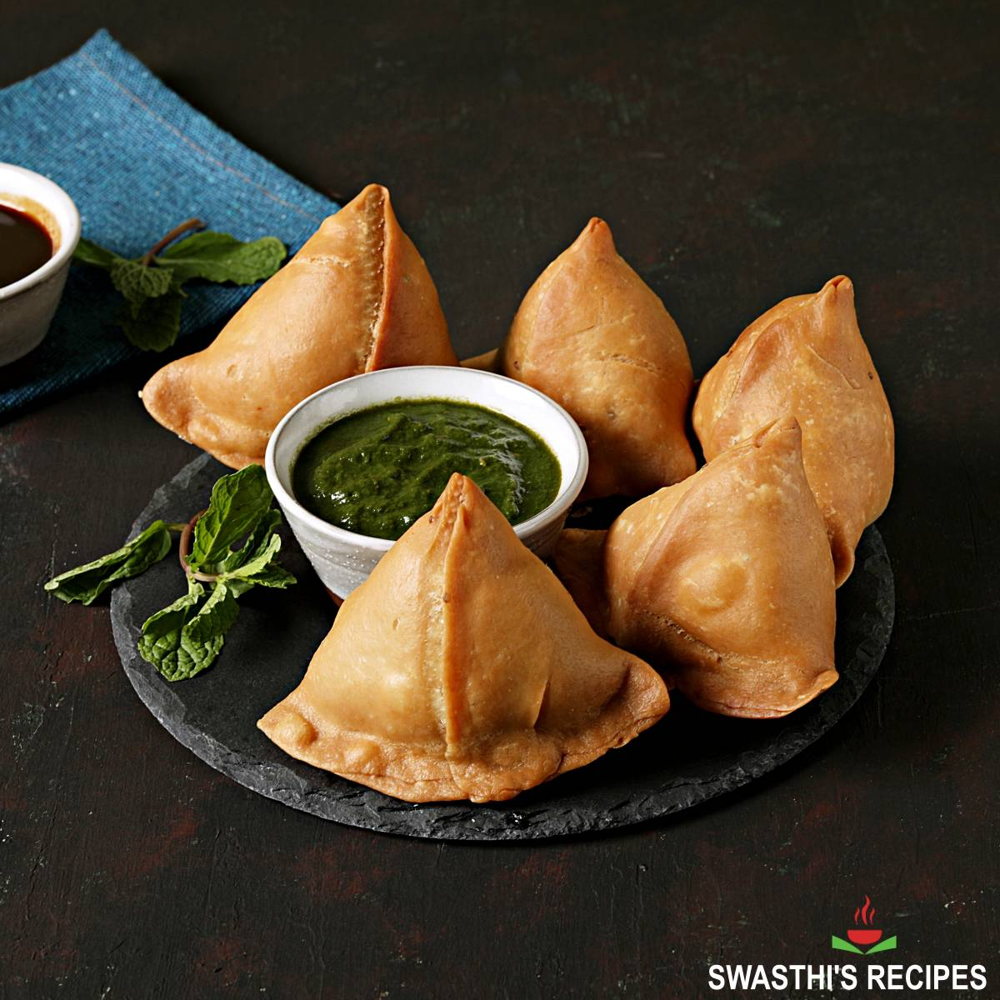

Lasagna

Samosa is a deep-fried or baked pastry filled with a mixture of ingredients, typically including spiced potatoes, peas, lentils, or minced meat.
Ingredients:
- 2 cups all-purpose flour
- 1/4 cup vegetable oil or gheo
- 1/2 teaspoon salt
- Water (for kneading)
Steps:
- Combine flour, salt, and oil; knead with water to form a smooth dough, then let it rest.
- Sauté cumin seeds, onions, and spices; mix with boiled and mashed potatoes and peas.
- Roll dough into discs, form cones, fill with the potato mixture, and seal into triangles.
- Heat vegetable oil for frying to 350-375°F (175-190°C).
- Deep-fry assembled samosas until golden brown; drain excess oil and serve hot with chutney.